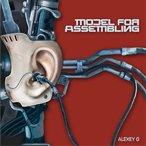
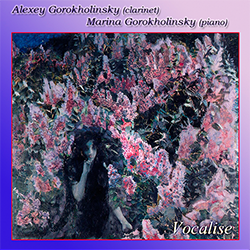

DISCOGRAPHY
| ALBUM COVER | ARTIST | ALBUM TITLE | INFO |
|---|---|---|---|
| Alexey Gorokholinsky pianist - Vassily Primakov |
Grand Duo |
Composers: C.M. von Weber, F. Mendelssohn Label: LP Classics Genre: Classical Release Date: Mar 13, 2015 Listen on iTunes |
|
|  | Alexey G | Model for Assembling |
Composers: Alexey Gorokholinsky Label: Self-Released Genre: Electronic/Classical Release Date: Aug 22, 2011 Listen on iTunes |
| Alexey Gorokhkolinsky and Marina Gorokholinsky |
Delicacies |
Composers: Rimsky-Koraskov, Tchaikovsky, Kovacs, Bazzini, Paganini, Rachmaninoff, Debussy, Francaix, Bozza, Prokofiev Label: Self-Released Release Date: Jan 26, 2009 Listen on iTunes​ |
|
|  | Alexey Gorokholinsky and Marina Gorokholinsky |
Vocalise |
Composers:Schumann, Saint-Saens, Chausson, Brahms, Verdi/Lovreglio, Rachmaninoff Label: Self-Released Genre: Classical Release Date: 2005 Listen on iTunes |
.png) |
Alexey Gorokholinsky | Time Pieces |
Composers:Stravinsky, Debussy, Milhaud, Ravel, Kovacs, Muczynski, Bozza Label: Classical Records Genre: Classical Release Date: 2002 Listen on iTunes |